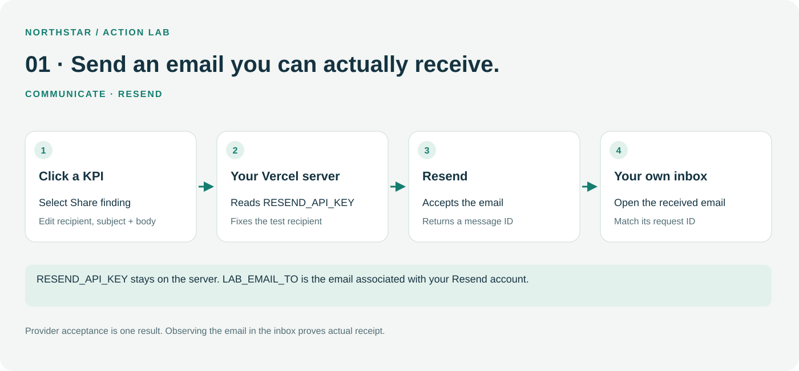

01 · Overview · Email
Share the finding in a KPI
- Choose your filters and click the KPI you want to discuss.
- Choose Share finding in that KPI’s context.
- Edit the recipient, subject and email message. Preserve the selected metric and current filters.
- Review the exact email and confirm.

Connect my email service
In Resend → API Keys, create a Full access practice key so the app can send and read the result.
RESEND_API_KEY- Your Resend practice key.
LAB_EMAIL_TO- The email associated with your own Resend account.
The supplied sender is onboarding@resend.dev. The recipient field is editable, but this test route permits only your configured LAB_EMAIL_TO. Other recipients need a verified domain and an explicit change to that restriction.
Checkpoint: open the real message in your inbox and compare the KPI, filters, text and request ID. “Accepted” alone does not prove receipt.